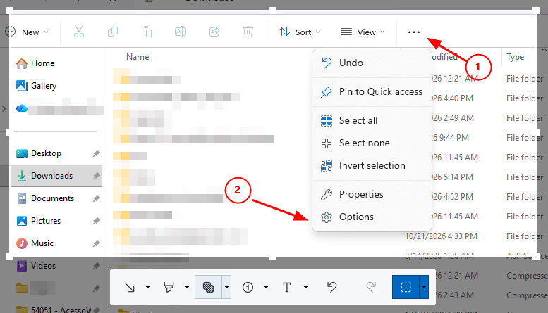
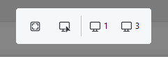
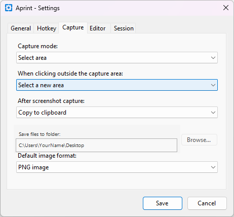

Captura de tela
Inicie a captura com um atalho global ou pelo ícone na bandeja do sistema. Escolha todos os monitores, a tela sob o cursor ou uma região retangular. Na seleção, a barra permite alternar entre as telas disponíveis. Configure o que acontece ao clicar fora da área, a ação após a captura, a pasta e o formato padrão.


